Приветствия и вступление. Скачать mp3 (6,86 Mb)
Советы — главный результат деятельности Ленина. Александр Сергеевич Казеннов, доктор философских наук, профессор, руководитель Ленинградского отделения Фонда Рабочей Академии. Скачать mp3 (2,99 Mb)
Ленин в апреле 1917-го: гонка за лидерами. Леонид Александрович Наливкин, заведующий Филиалом Государственного музея обороны и блокады Ленинграда. Скачать mp3 (5,55 Mb)
Ленин — диалектик. Михаил Васильевич Попов, доктор философских наук, профессор кафедры философии и культурологии Санкт-Петербургского государственного университета, член Президиума Петровской академии наук и искусств. Скачать mp3 (7,37 Mb)
Ленин и Финляндия. Хану Харью, Председатель Коммунистической Рабочей партии Финляндии. Скачать mp3 (10,9 Mb)
Стихи о Ленине. Евгений Степанович Смоляков, Заместитель председателя Санкт-Петербургского Экспертного Совета Всероссийского исследовательского центра экстренной и радиационной медицины МЧС России, доктор медицинских наук. Скачать mp3 (3,62 Mb)
Ленинская трактовка политической культуры и современность. Виктор Александрович Сидоров, доктор философских наук, профессор Санкт-Петербургского государственного университета. Скачать mp3 (9,31 Mb)
Ленин и актуальные проблемы борьбы с коррупцией. Владимир Иванович Еременко, доктор философских наук, депутат Законодательного Собрания Санкт-Петербурга Третьего созыва. Скачать mp3 (12,2 Mb)
Родословие В.И. Ленина. Михаил Григорьевич Штейн, кандидат исторических наук, доцент Санкт-Петербургского университета иудаики. Скачать mp3 (7,56 Mb)
Марксизм-ленинизм в современной Украине. Тамила Иосифовна Яброва, кандидат экономических наук, доцент, Главный редактор журнала "Марксизм и современность". Скачать mp3 (10,3 Mb)
Заключительное слово. Скачать mp3 (1,03 Mb)
| 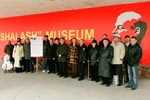 | 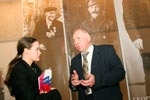 | 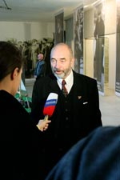 | 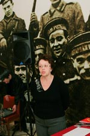 | |
| ||||
| 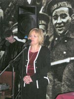 | 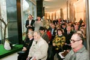 | 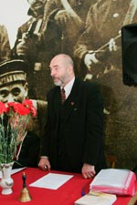 | 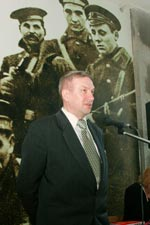 | 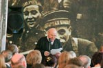 |
| ||||
| 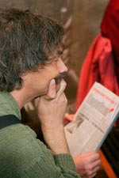 | 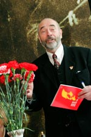 | |
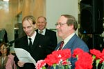 | 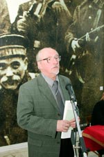 |
| ||||
| 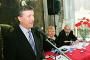 | 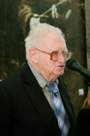 | 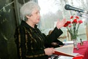 | 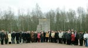 |
| 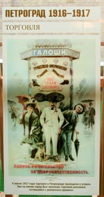 | 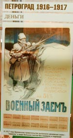 | 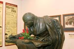 | 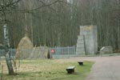 | |
| ||||
| 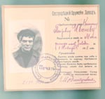 | 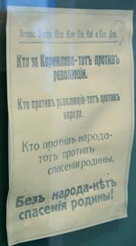 | 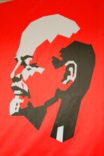 |
|
|
|